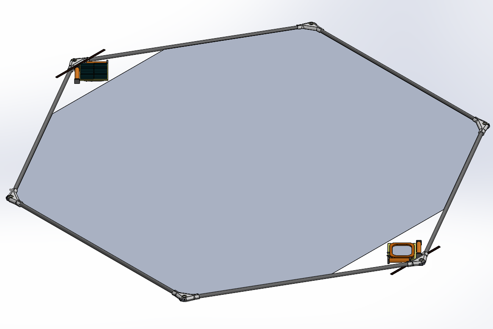
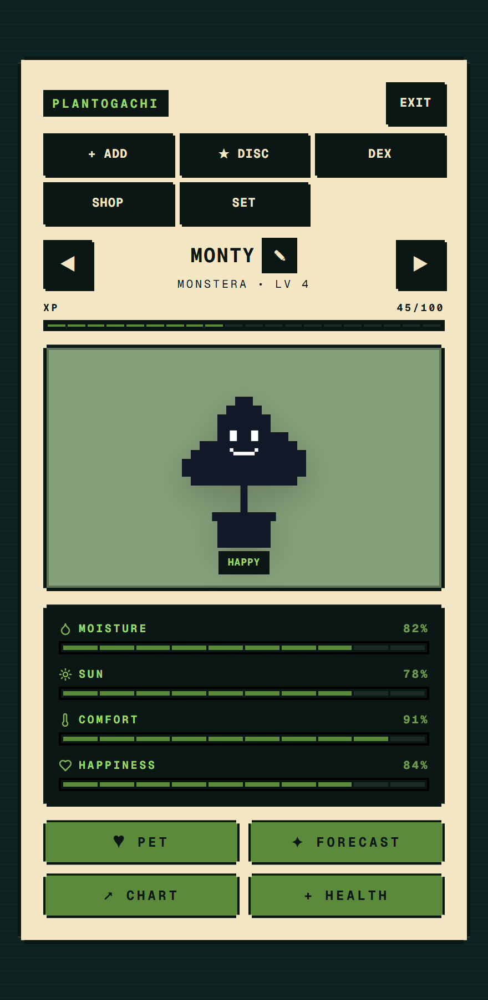
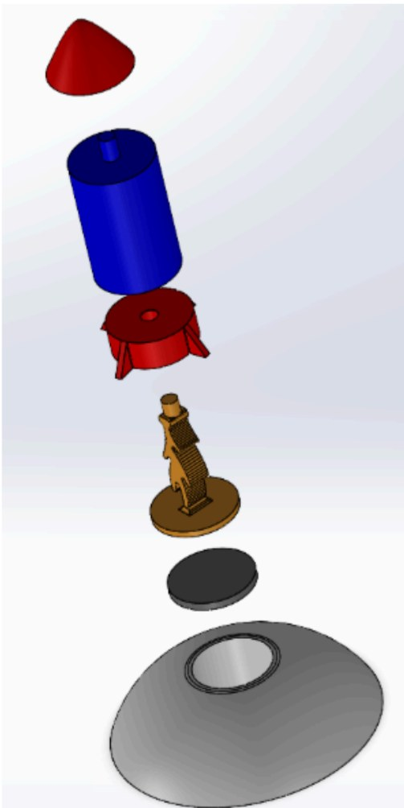

STAGE 2-7
SELECT LEVEL
Six projects. Open one for the full case study: what I did, how, and what the numbers say. The ones marked 3D have models you can spin.

LVL 01 · Mar 2026 – Present 3D Duke Solar SailCFRP Frame Structure 27.6 Hz first mode, Python FEA vs. the standard's 20 Hz floor LVL 02 · Sep 2025 – Present
CubeSatAtmospheric Sensing System
28 km peak altitude logged in flight
LVL 02 · Sep 2025 – Present
CubeSatAtmospheric Sensing System
28 km peak altitude logged in flight

LVL 03 · May 2026 – Present PlantogachiSensor-Driven Plant-Care Device $32 prototype BOM ($11 quoted at bulk)
LVL 04 · Spring 2026 3D McRocketHappy Meal Toy Designed for Injection Molding < $0.36 per unit in the DFM cost model LVL 05 · Spring 2026 3D
Sunflower Seed Shelling MachineHand-Powered Mechanism
Fastest of the 4 EGR 121 course sections
LVL 05 · Spring 2026 3D
Sunflower Seed Shelling MachineHand-Powered Mechanism
Fastest of the 4 EGR 121 course sections
 LVL 06 · Fall 2025
Tiger Enrichment DeviceNorth Carolina Zoo, Client Project
400 lb static load, no damage
LVL 06 · Fall 2025
Tiger Enrichment DeviceNorth Carolina Zoo, Client Project
400 lb static load, no damage
Not shown: FaunaLabs, Embedded & Mechanical Intern, Mar–Sep 2026. I qualified a whale-tag enclosure to 20 MPa, designed a timed-release link, and fixed a Cortex-M7 cache/DMA race that cut dropped sensor frames 90%, with 97% uptime across the deployed fleet. Publishing is restricted.